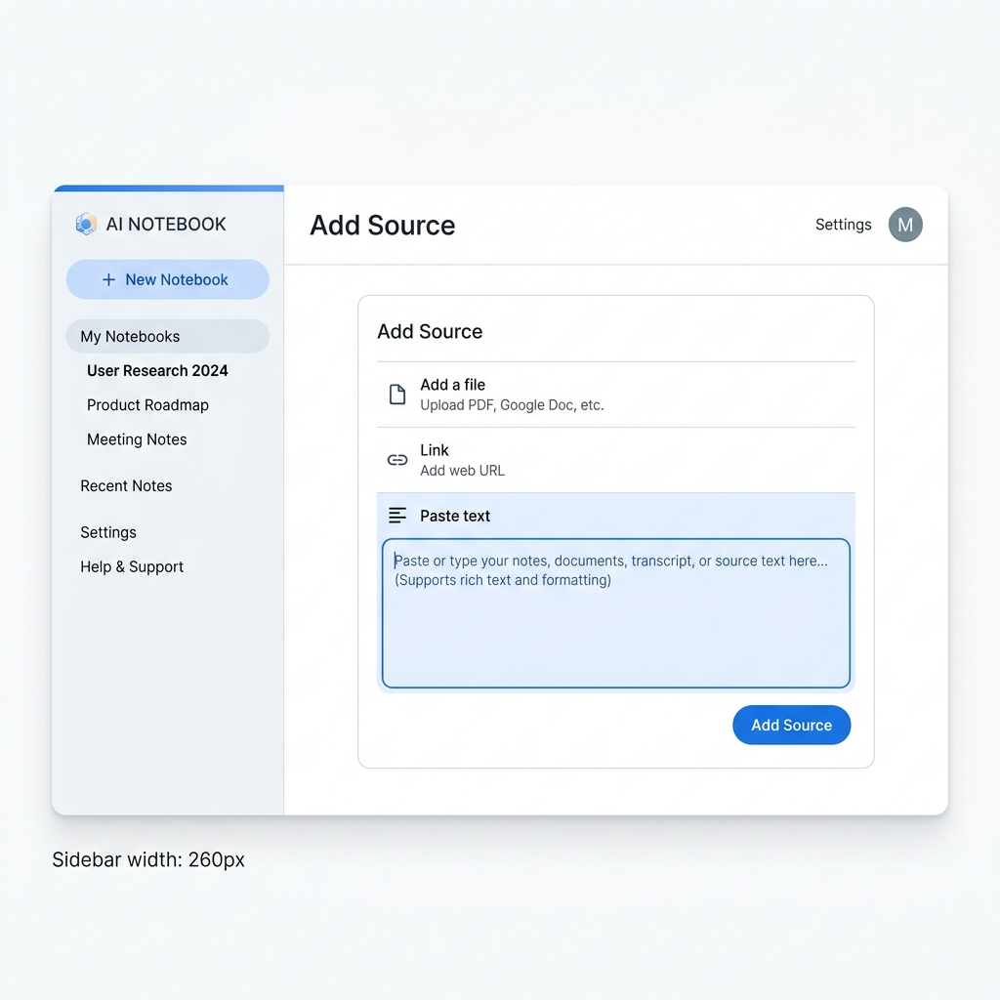
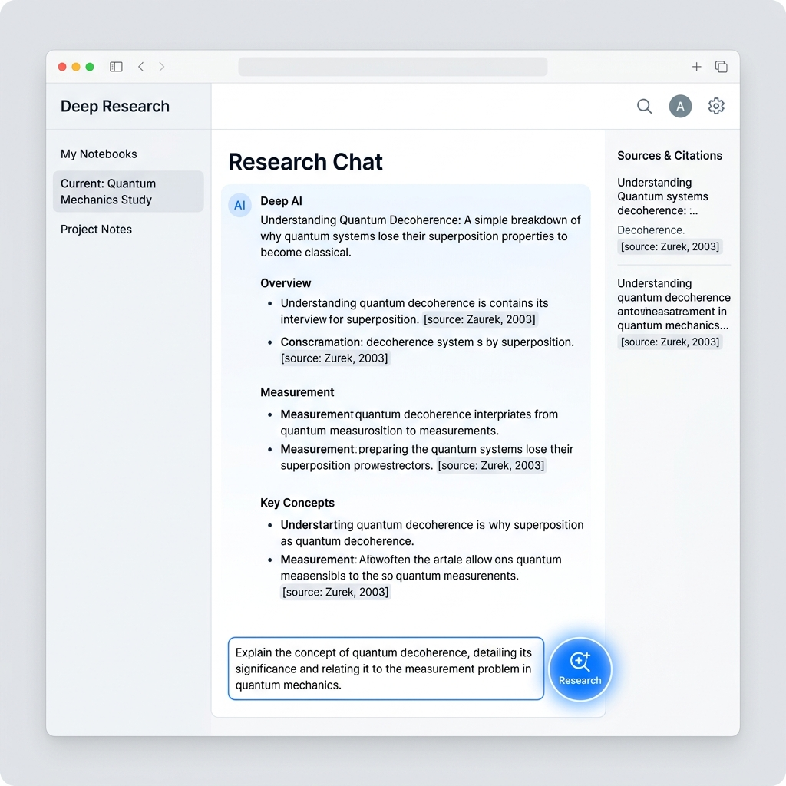
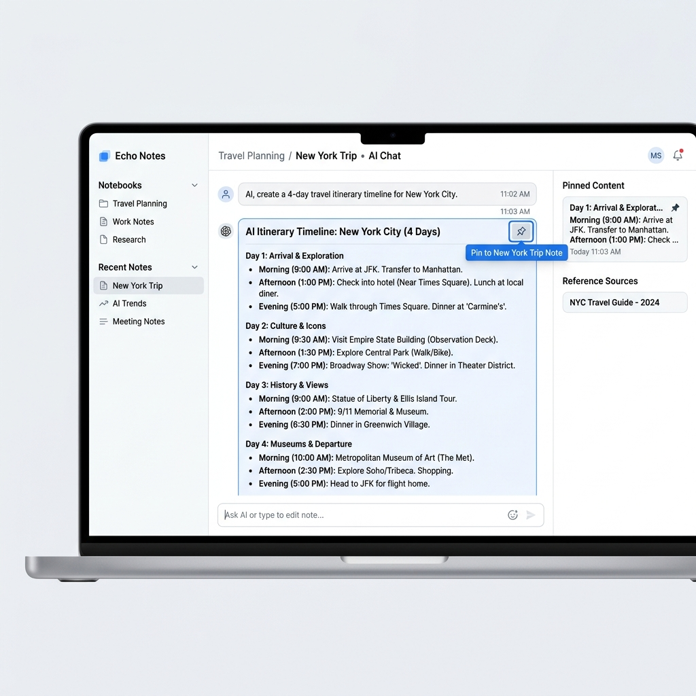
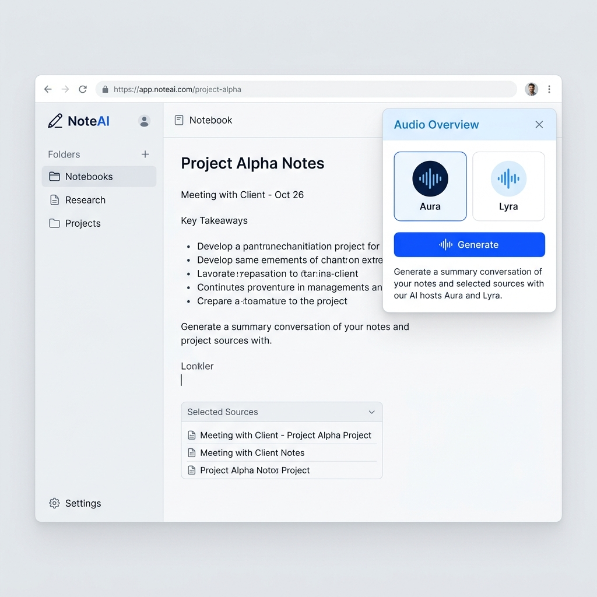

🎯 本階段目標：將你在第一階段收集到的三份關鍵資料，匯入 NotebookLM 中進行深度研究，產出最符合你需求的專屬旅遊行程，甚至能一鍵轉為 Podcast 廣播！
1
建立專屬筆記本與「最高指導原則」
我們要把第一階段產出的「需求總表」當作後續所有 AI 規劃的依據，避免它幫你亂排行程！
- 前往 NotebookLM，點擊建立「新的筆記本 (New Notebook)」
- 新增一個來源，選擇「貼上文字 (Paste text)」
- 將你在 Phase 1 產生的 【1. NotebookLM 旅客需求總表】 完整貼上。
- 這樣 NotebookLM 就會牢牢記住你的所有偏好與限制！

2
啟動 NotebookLM Deep Research

NotebookLM 不只能讀你的資料，現在還能主動上網幫你查證最新資訊！
操作重點：
- ✅ 在 NotebookLM 介面中找到並啟動 Deep Research (深度研究) 功能。
- ✅ 將 Phase 1 產出的 【2. NotebookLM Deep Research prompt】 貼入輸入框。
- ✅ NotebookLM 會自動上網查證營業時間、班次與價格，並產出研究報告。
3
匯入來源與產出最終行程
研究報告完成後，我們要把這些熱騰騰的資訊餵給 AI，讓它幫我們排出行李箱都能無腦跟的最終行程表。
- 將剛剛 Deep Research 產出的研究報告與重要來源網址，匯入成為新的 Source。
- 在下方對話框貼上 【3. 匯入來源後追問 prompt】。
- NotebookLM 會綜合「你的需求」與「最新研究」，輸出最終行程表！
- 可以點擊對話框右上角的圖釘，將它儲存為筆記 (Note) 以免遺失。

4
轉換為專屬 Podcast 導覽

行程排好了，不如讓 AI 把它變成廣播節目，在出發前就可以先聽聽看有什麼好玩的！
- 點擊畫面右上角的 「Audio Overview (語音摘要)」 面板。
- 你可以直接點擊「Generate」，或是貼上進階指令，讓 Podcast 更符合你的出遊情境！
🎧 進階玩法：專屬地陪指令
將下方指令貼到 NotebookLM 「語音摘要」旁的筆 【在本集中，AI 主持人應著重哪些部分？】指令框中再生成。
🏠
家族親情版
💼
商務考察版
🥂
熱血好友版
🎈
親子探險版